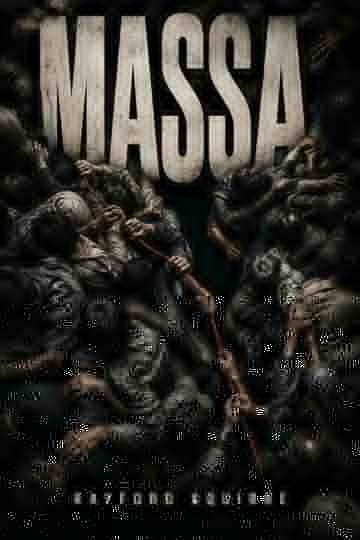

AUTHOR · FICTION · NONFICTION
Stories and ideas built to leave a mark.
Rayford Aquirre writes across fiction, philosophy, belief, technology, consciousness, relationships, and children's literature. One independent catalog. 118 ebooks.
- 118
- ebooks
- 10+
- series & cycles
- 2026
- current catalog
NEW RELEASE
MASSA

A NOVEL
When no one person controls the movement, responsibility moves through everyone.
MASSA follows a ceremonial crowd in Ossara as local decisions, signals, bodies, and pressure begin to interact in ways no individual can fully see. The novel turns collective motion itself into the engine of suspense.
Newly added to the Rayford Aquirre catalog as ebook #118.
Find MASSA in the catalogTHE CATALOG
118 ebooks. One searchable library.
Search by title or series, filter by reading area, show only series titles, or change the sort order. Book-specific covers, blurbs, and universal store links can be added as the catalog is enriched.
ABOUT THE AUTHOR
Rayford Aquirre
Rayford Aquirre is an independent author working across multiple forms and subjects, from novels and speculative fiction to philosophy, religion, artificial intelligence, consciousness, relationships, practical nonfiction, and children's literature.
This website serves as the central index for that body of work. Individual titles link outward to their available retail or distribution pages while the catalog remains organized in one place.